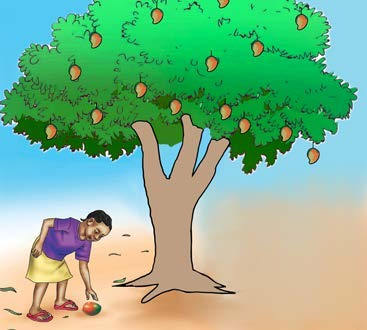
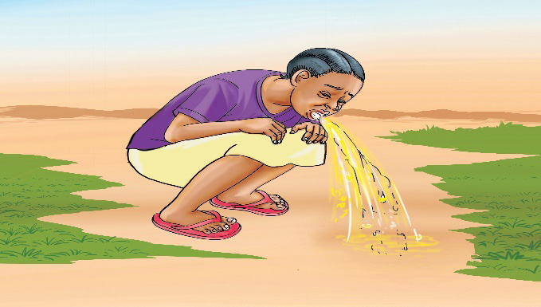

Chunguza picha au mchoro mguso, kisha andika sentensi moja kwa mtiririko sahihi wa matukio; tumia eneo la kuandikia, kibodi au Breli.
Chunguza picha au mchoro mguso, kisha andika sentensi moja kwa mtiririko sahihi wa matukio; tumia eneo la kuandikia, kibodi au Breli.

Msichana anachuma tunda lililoanguka chini ya mti.Chunguza picha au mchoro mguso, kisha andika sentensi moja kwa mtiririko sahihi wa matukio; tumia eneo la kuandikia, kibodi au Breli.

Msichana anatapika akiwa ameinama nje.Chunguza picha au mchoro mguso, kisha andika sentensi moja kwa mtiririko sahihi wa matukio; tumia eneo la kuandikia, kibodi au Breli.